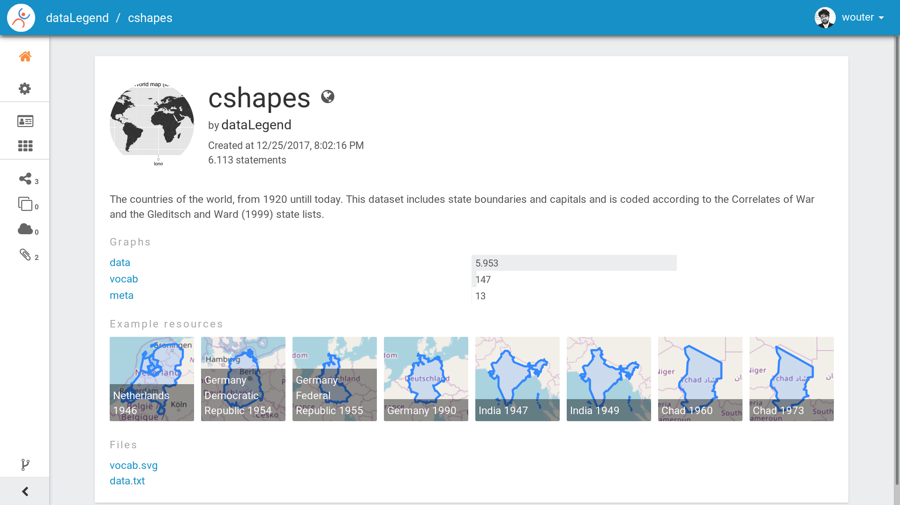
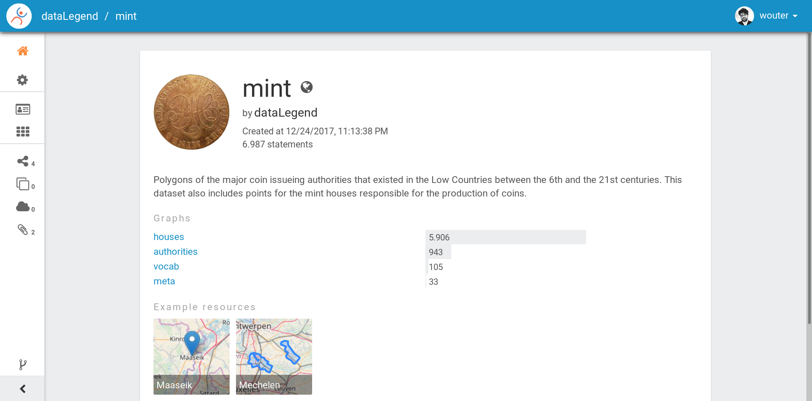
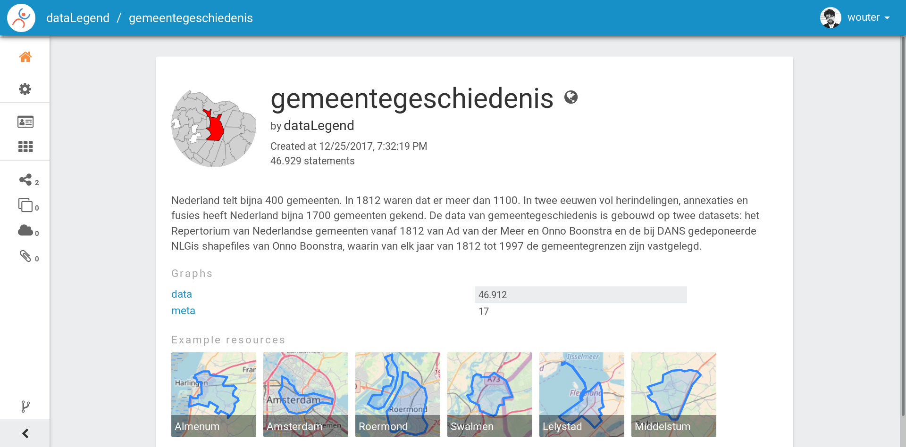

nlGis
Table of Contents
This repository documents and provides the reusable source for generating Linked Data versions of several key datasets about historic geographic information. This work is funded by the International Institute for Social History (IISH) and performed by Triply, in a close collaboration between Wouter Beek (Triply) and Richard Zijdeman (IISH).
Note: this documentation contains a few conversion mistakes (e.g., the SVG versions of the UML-like diagrams) on Githib. The correct HTML version can be read here.
The datasets can be visited online:
1 Installing the ETL
1.1 Install GDAL
$ sudo apt install gdal-bin # Ubuntu $ sudo dnf install gdal # Fedora
1.2 Install GraphViz
$ sudo apt install graphviz # Ubuntu $ sudo dnf install graphviz # Fedora
1.3 Install SWI-Prolog
The following works on Ubuntu:
sudo apt-add-repository ppa:swi-prolog/stable sudo apt-get update sudo apt-get install swi-prolog
For Fedora or other distros, see the online documentation.
1.4 Install Prolog libraries
$ cd ~/lib/swipl/pack $ git clone https://github.com/wouterbeek/Prolog-Library-Collection $ git clone https://github.com/wouterbeek/plRdf $ git clone https://github.com/wouterbeek/tapir
1.5 Add a Triply configuration file
Add configuration file (e.g., druid.datalegend.net) with the
following contents:
{
"host": "api.druid.datalegend.net",
"token": "TRIPLY-TOKEN-FROM-DRUID",
"user": "dataLegend"
}
1.6 Running an ETL script
Once everything is installed, each of the ETL scripts (run.pl) can
be run in the following way:
$ cd cshapes # Go into the directory containing the script. $ swipl -g 'run.' run.pl --conf=~/druid.datalegend.net
2 Generic ETL process
The ETL process is automated to the extent possible. This includes the following generic steps:
- Downloading the source data, if accessible online.
- Unarchiving the source data, if needed.
- Converting the source data from its original format to RDF.
- Generating a UML-like overview of the dataset's schema, based on a SHACL specification file.
- Upload the dataset to Druid.
3 CShapes ETL
The script cshapes/run.pl creates the Linked Data version of the
latest version of Nils Weidmann's CShapes dataset
(http://nils.weidmann.ws/projects/cshapes.html). At the moment of
writing, the latest version is 0.6 (2016-11-30). CShapes contains
detailed polygons of the historical maps of the countries of the
world, from 1920 until the present day. Each country record contains
the codes assigned to it by the Correlates of War and the Gleditsch &
Ward state lists. We thank Nils Weidmann for publishing this dataset
to the community.
3.1 Downloading the latest version
Different versions of CShapes are published online (http://downloads.weidmann.ws/cshapes/Shapefiles/). Even though the versions are not described by metadata, the HTML of the page is very structured, which allows us to extract the latest version automatically through XPath.
For example, we can extract the latest version based on the following HTML elements that appear in the web page:
<a href="cshapes_0.4-2.zip">cshapes_0.4-2.zip</a> <a href="cshapes_0.5-1.zip">cshapes_0.5-1.zip</a>
In order to do so we first download the web page into a DOM
representation (Document Object Model). We then try to find all the
pairs Version-RelUri such that Version denotes a version
identifying term of the form version(Major,Minor,Patch), and
RelUri is the relative URI from which we can download that version.
If we sort those results in descending order (order of terms @>), we
can match the latest version as the first item in the ordered sequence
Sorted. Since we cannot download from a relative URI (RelUri), we
use the original download URI (BaseUri) to retrieve the absolute URI
from which we can obtain the latest version of CShapes (Uri). We
end this part with an input stream In from which we can access the
source data stream.
BaseUri = 'http://downloads.weidmann.ws/cshapes/Shapefiles/', load_html(BaseUri, Dom, []), findall( Version-RelUri, ( xpath(Dom, //a(@href), RelUri), uri_components(RelUri, UriComps), uri_data(path, UriComps, Path), atom_codes(Path, Codes), phrase(cshapes_version(Version), Codes) ), Pairs ), sort(1, @>, Pairs, Sorted), Sorted = [Version-RelUri|_], uri_resolve(RelUri, BaseUri, Uri), http_open2(Uri, In),
This process looks a little convoluted: is it not faster to manually download this dataset through a web browser? However, notice that the approach outlined above can be used to extract any number of download links from any number of weakly structured HTML pages.
3.2 Transform the source data to RDF
From the last step we have an input stream In from which we can now
read the source data.
3.2.1 ZIP → ShapeFile
The source data is compressed using ZIP. We first unarchive this ZIP, which extracts various ShapeFile files.
archive_extract(In1, ., []),
At the end of this step we have the following ShapeFile files locally:
.dbf, .prj, .shp, .shx, and .txt.
3.2.2 ShapeFile → GML
While it may be possible to convert a ShapeFile into RDF directly, it is difficult to find online resources that explain how the ShapeFile format works, which may be due to it being proprietary. We therefore convert ShapeFile to Geography Markup Language (GML), which is an XML-based open format from which we can easily convert to RDF.
For this we use the external program ogr2ogr from the Geospatial
Data Abstraction Library (GDAL). Calling an external program is not
as easy as some programmers seem to think. In practice we often see
programmers call an external program without relaying the error and
output streams, which means that warnings and errors get lost and
potential mistakes are not detected. This is why we explicitly copy
the error stream (from ProcErr to user_error) and the output
stream (from ProcOut to user_output) using two detached threads.
We also check whether the status of the external process signals an
error (Status), retrieved through the process identifier (Pid).
process_create( path(ogr2ogr), ['-f','GML',file('data.gml'),file('cshapes.shp')], [process(Pid),stderr(pipe(ProcErr)),stdout(pipe(ProcOut))] ), thread_create(copy_stream_data(ProcErr, user_error), _, [detached(true)]), thread_create(copy_stream_data(ProcOut, user_output), _, [detached(true)]), process_wait(Pid, exit(Status)), (Status =:= 0 -> true ; print_message(warning, process_status(Status))),
At the end of this step we have the local file data.gml.
3.2.3 GML → RDF
For this step we are going to stream through the GML file (data.gml)
from the previous step. While streaming through this GML file, we
assert RDF triples to the internal SWI-Prolog RDF store. Once the GML
file is completely transformed, we export the content of the internal
RDF store to a GNU zipped N-Quads file (data.nq.gz).
We are going to process the GML file one record at a time. We specify
the name of the XML record: ogr:cshapes. Each individual record is
then processed by cshapes_record/1 (documented below). Notice that
a similar approach work for converting any XML file to RDF: there is
no need to load the entire XML file into memory.
setup_call_cleanup( open('data.gml', read, In2), call_on_xml(In2, ['ogr:cshapes'], cshapes_record), close(In2) ), setup_call_cleanup( gzopen('data.nq.gz', write, Out), rdf_save2(Out), close(Out) ),
cshapes_record/1 is called for every individual record in the
CShapes source file. The record is an XML sub-tree (Dom). We have
declared namespaces for the dataset's vocabulary (vocab) and for the
dataset's instances (resource). We also have specified a data graph
G.
- Country resource
Let's look at a simple conversion from XML to RDF: from the DOM record (
Dom) we extract the name of the country (CountryName) with an XPath query that matches XML tagogr:CNTRY_NAME. We then create an IRI of the formresource:country/NAME, and assert the following quadruple:resource:country/NAME a vocab:Country graph:data
The code is as follows:
xpath_chk(Dom, //'ogr:CNTRY_NAME'(normalize_space), CountryName), rdf_create_iri(resource, [country,CountryName], Country), rdf_assert(Country, rdf:type, vocab:'Country', G),
- Country label
Other RDF triples are created in a similar way. For example, the country name is also also asserted as an
rdfs:label:rdf_assert(Country, rdfs:label, CountryName@'en-gb', G),
- Correlates of War / Gleditsch & Ward state list dates
The Correlates of War, as well and the Gleditsch & Ward state list dates are stored in three separate properties (day, month, year) in the source data. We combine there into one RDF triple with an object term literal with the
xsd:datedatatype. The source data uses-1in case date information is absent. Here is an example for one date (the Correlates of War start date):( xpath_chk(Dom, //'ogr:COWSYEAR'(normalize_space), Y1), Y1 \== '-1' -> xpath_chk(Dom, //'ogr:COWSMONTH'(normalize_space), M1), xpath_chk(Dom, //'ogr:COWSDAY'(normalize_space), D1), maplist(atom_number, [Y1,M1,D1], [Y2,M2,D2]) ; true ),
- Country & country-slice
Since the properties of a country change over time, we introduce the notion of a time-slice:
rdf_create_iri(resource, [country,CountryName,Y2], CountrySlice), rdf_assert(CountrySlice, rdf:type, vocab:CountrySlice', G), rdf_assert(Country, vocab:hasTemporalSlice, CountrySlice, G),
- Capital city geolocation
Another example of combine multiple source properties is the geolocation of capital cities. While CShapes stores the longitude and latitude separately, we combine them into one Well-Known Text (WKT) literal of type
Point.xpath_chk(Dom, //'ogr:CAPLONG'(number), CapitalLong), xpath_chk(Dom, //'ogr:CAPLAT'(number), CapitalLat), rdf_assert_wkt(Capital, 'Point'([CapitalLong,CapitalLat]), G),
3.3 Generating the schema overview
Besides the data generated in the previous step (data.nq.gz), we
also have hand-crafted metadata (meta.trig.gz) and vocabulary
(vocab.trig.gz) files. The latter includes a SHACL description of
the schema, which can be exported to GraphViz using a UML-like
representation. In the representation, boxes denote classes and arcs
between boxes denote properties between instances of those classes.
Properties with literal objects are enumerated within each box,
including the datatype IRI of the object literals.
3.4 Uploading the dataset
Once we have converted the source data to RDF (data.nq.gz) and have
exported the schema overview (vocab.svg), we can upload the dataset
to Druid. The dataset consists of the following components:
- Access level
public(the default isprivate). - Avatar image file (
avatar.png). - Binary / non-RDF files: the source data documentation by Nils
Weidmann (
data.txt), and the UML-like schema export (vocab.svg). - Dataset description.
- List of example resources.
- RDF files (
data.nq.gz,meta.trig.gz, andvocab.trig.gz).
Properties = _{ accessLevel: public, avatar: 'avatar.png', binary_files: ['data.txt','vocab.svg'], description: "The countries of the world, from 1920 untill today. This dataset includes state boundaries and capitals and is coded according to the Correlates of War and the Gleditsch and Ward (1999) state lists.", exampleResources: [resource-'country/Guyana/1966'], files: ['data.nq.gz','meta.trig.gz','vocab.trig.gz'], prefixes: [ bnode, capital-'https://iisg.amsterdam/resource/capital/', country-'https://iisg.amsterdam/resource/country/', dataset-'https://iisg.amsterdam/dataset/', graph, resource, sh, vocab ] }, dataset_upload(cshapes, Properties),

4 Mint Authorities of the Low Countries ETL
The Mint Authorities of the Low Countries (https://datasets.socialhistory.org/dataset.xhtml?persistentId=hdl:10622/HPIC74) is a dataset containing the polygons of the major coin issuing authorities that existed in the Low Countries. Each authority is paired with beginning and end dates. Starting from the twelfth century onward, most authorities are included except for small authorities such as towns. We thank Rombert Stapel for publishing this dataset to the community.
4.1 Downloading the latest version
The latest version can be download from the IISH Dataverse instance (https://datasets.socialhistory.org/dataset.xhtml?persistentId=hdl:10622/HPIC74). The download cannot be automated because a form has to be filled in prior to downloading the data. (The form is there to help the original data publishers get some feedback about the extent to which this dataset is reused by the community.)
4.2 GeoJSON → RDF
The script at mint/run.pl assumes the following files are present:
mint/authorities.geojson.gzmint/houses.geojson.gz
The GeoJSON format consists of JSON objects that contains a features
key. These features are extracted from a GeoJSON file (File) with
the following code:
file_features(File, Features) :- setup_call_cleanup( gzopen(File, read, In), json_read_dict(In, Dict, [value_string_as(atom)]), close(In) ), _{features: Features} :< Dict.
file_features/2 is then use in the following way to extract all
authority features, and runs authority/2 to convert authority
features to RDF:
file_features('authorities.geojson.gz', Features), maplist(authority(graph:authorities), Features),
4.2.1 Authority
We extract the geometry for each authority feature set (Features),
and extract the type and coordinates from it. The type and
coordinates are combined into one Prolog term Shape which is
asserted as Well-Known Text (WKT).
_{coordinates: Coords, type: Type} :< Featue.geometry Shape =.. [Type,Coords], rdf_assert_wkt(Authority, Shape, G1, Geometry2)
4.2.2 Date cleanup
In the GeoJSON source files, dates are specified as YYYY/MM/DD. We
reformat these to be compliant with the XML Schema datatype
xsd:date, using the following rewrite grammar:
date(date(Y,M,D)) --> integer(Y), "/", integer(M), "/", integer(D).
Some dates actually denote years. We have asserted these with
datatype IRI xsd:gYear. See the script for more details.
4.3 Generating the schema overview
As with the CShapes dataset, we have specified metadata
(meta.trig.gz) and vocabulary (vocab.trig.gz) files by hand. The
latter includes a SHACL description of the schema, which can be
exported to GraphViz using the UML-like representation discussed in
the section on CShapes.
4.4 Uploading the dataset
Once we have converted the source data to RDF (data.nq.gz) and have
exported the schema overview (vocab.svg), we can upload the dataset
to Druid. The dataset consists of the following components:
- Access level
public(the default isprivate). - Avatar image file (
avatar.png). - Binary / non-RDF files: movie created by Rombert Stapel
(
mint.mp4), and the UML-like schema export (vocab.svg). - Dataset description.
- List of example resources.
- RDF files (
data.nq.gz,meta.trig.gz, andvocab.trig.gz).
Properties = _{ accessLevel: public, avatar: 'avatar.jpg', binary_files: ['mint.mp4','vocab.svg'], description: "Polygons of the major coin issueing authorities that existed in the Low Countries between the 6th and the 21st centuries. This dataset also includes points for the mint houses responsible for the production of coins.", exampleResources: [authority-'Mechelen',house-'Maaseik'], files: ['data.nq.gz','meta.trig.gz','vocab.trig.gz'], prefixes: [ bnode, authority-'https://iisg.amsterdam/resource/authority/', dataset-'https://iisg.amsterdam/dataset/', fabio, graph, house-'https://iisg.amsterdam/resource/house/', orcid, rel, sh, vocab ] }, dataset_upload(mint, Properties),

5 Gemeentegeschiedenis ETL
The script gg/run.pl creates the Linked Data version of the latest
version of the Gemeentegeschiedenis dataset
(http://www.gemeentegeschiedenis.nl/). This dataset is already
published as RDF, so it does not have to be transformed. Instead, we
use the standardized RDF downloading approach in which we start with a
limited number of URIs and then traverse the rest of the RDF graph
from thereon. This download strategy is called dereferencing.
We use the 12 web pages for the Dutch provinces as the entry points to
the dataset. The RDF that is encountered by dereference the provinces
is asserted in the local SWI-Prolog RDF store. When the data is fully
dereferenced, we store the content of the internal RDF store to GNU
zipped N-Quads (data.nq.gz).
maplist( scrape_province, [ 'Groningen', 'Friesland', 'Drenthe', 'Overijssel', 'Flevoland', 'Gelderland', 'Utrecht', 'Noord-Holland', 'Zuid-Holland', 'Zeeland', 'Noord-Brabant', 'Limburg' ] ), setup_call_cleanup( gzopen('data.nq.gz', write, Out), rdf_save2(Out), close(Out) ),

6 nlGis: combining multiple datasets
The three converted datasets are grouped together into the overall nlGis dataset.